To many people, street photography does not seem like a proper genre. They say it is just snapping while walking down the street. There is no scenic beauty and no pretty women, so it does not feel high-end.
Now, more and more Chinese enthusiasts discover the appeal of street photography. More people head out to sweep the streets. This small genre is gaining wider acceptance, especially among Leica users.
We once shared the street photography lessons of Eric Kim. Almost two years have passed. Have you worked out your own lessons since then? Follow China Photos for more. The WeChat ID is wwwcnphotosnet. The lessons below, from another enthusiast, street photography lessonsmay also inspire you.
1. The definition of street photography does not matter.
2. No one has ever defined street photography exactly.
3. Almost any photo you take on the street can be street photography.
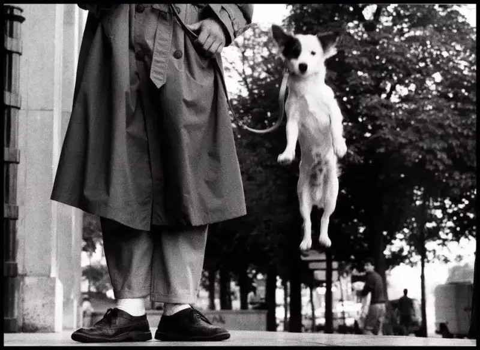
by Elliott Erwitt
4. Street photography can be staged.
5. Street photography is not objective, and it never needs to be.
6. Street photography is not the same as news photography.
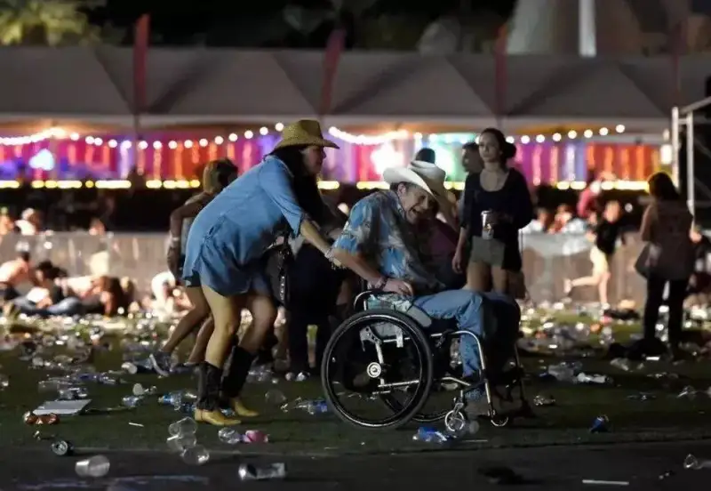
“Las Vegas Shooting.” Photographer: David Becker (USA). This is a news photo.
7. Street photography does not have to happen in a street.
8. Many people on the street do not want to be photographed, but quite a few are happy to be.
9. Taking photos in public places is legal.
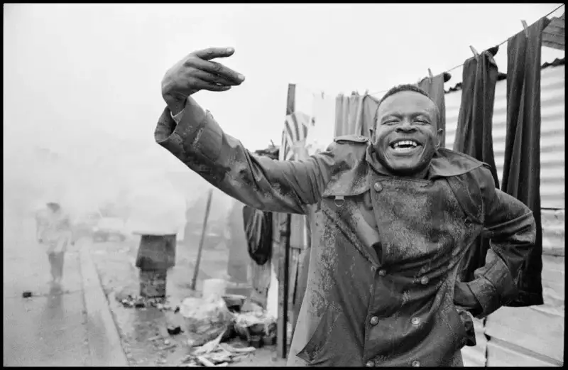
Many people are friendly when they face the camera. by Ian Berry
10. The camera does not matter. What matters is how you see the world. As Elliot Erwitt said, photography is the art of observation.
11. Film and digital each have their own benefits.
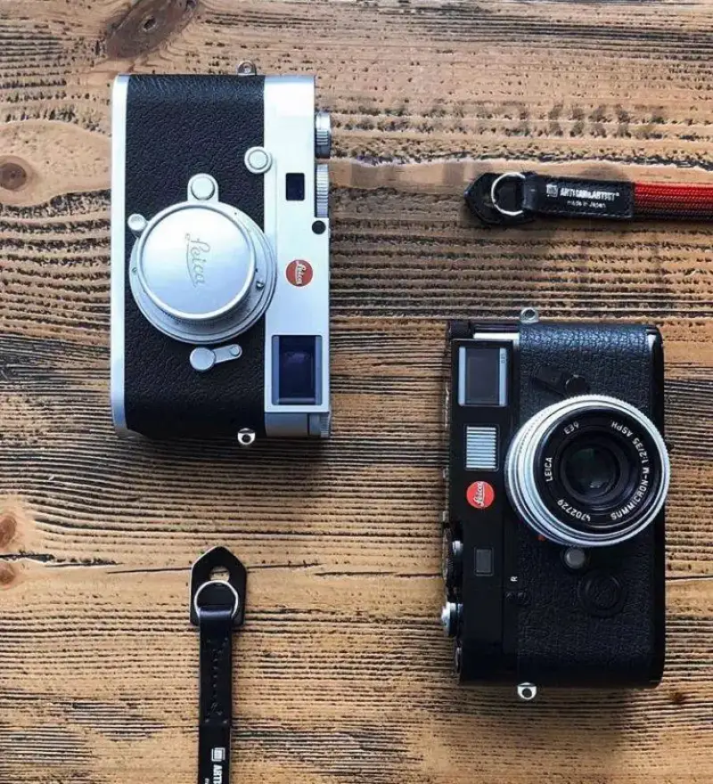
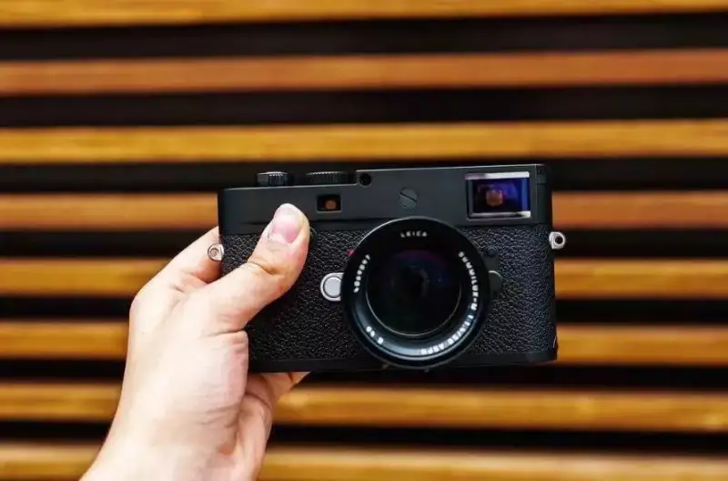
12. Knowing the history of photography matters a lot. If you study it, you will see that what most people call photography today is not really photography.
13. But if you only shoot soft Japanese-style scenes, you can skip the history.
14. Magnum Photos is a real landmark in photo history, but do not turn it into a myth. They are people, just like us.
15. Henri Cartier-Bresson is the undisputed father of street photography, and his work is truly excellent.
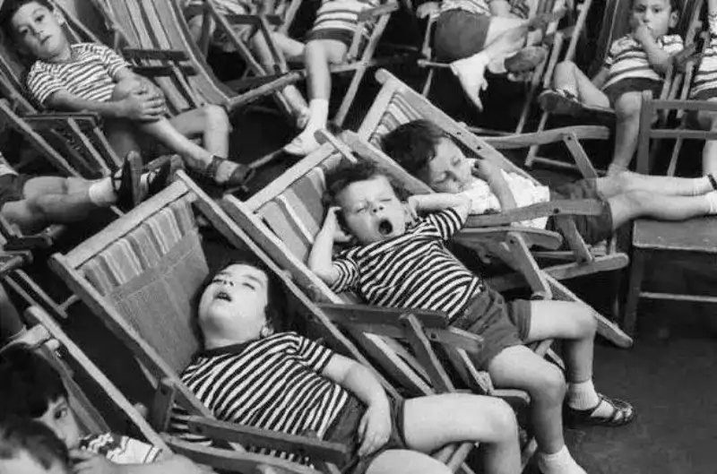
by Cartier-Bresson
16. Everyone likes a different style. Just follow your own heart.
17. I do not advise everyone to copy Bruce Gilden or Mark Cohen, especially introverts.
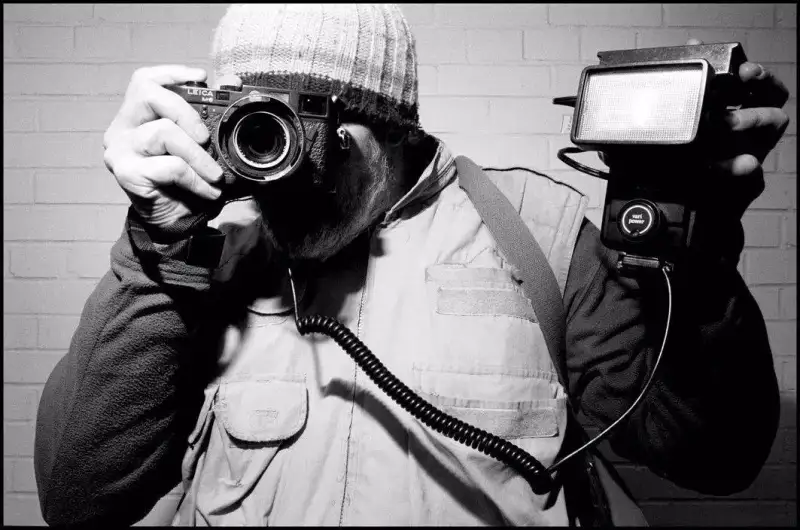
A self-portrait by Bruce Gilden
18. Shoot for yourself. Do not care too much about what others think.
19. Likes on social media mean little, because most people do not understand photography.
20. I only care about the views of people I respect, such as the photographers I admire.
21. Even if 99 percent of the world rejects my work, the approval of Bruce Gilden alone would satisfy me.
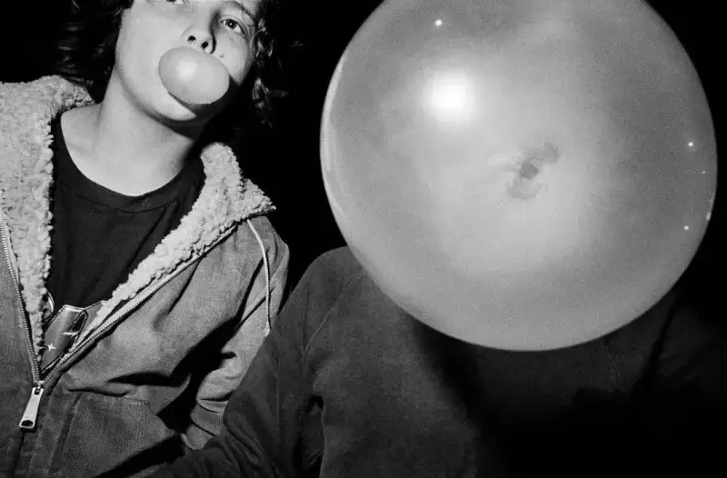
by Bruce Gilden
22. If you read English and have not read Eric Kim's street photography blog, you must.
23. Josef Koudelka and Vivian Maier are my spiritual leaders.
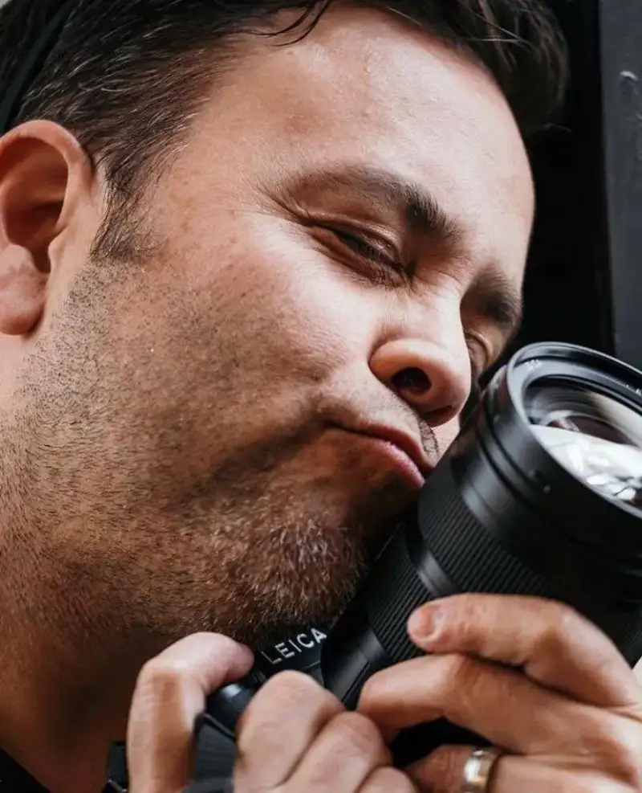
24. Even a master like Josef Koudelka is never fully happy with his work. He has shot for over half a century and still chases what he calls the limit.
25. Daido Moriyama has photographed Shinjuku for over half a century and still shoots tirelessly. That is what I admire most about him.
26. High-contrast black and white cannot hide a weak photo. A mediocre photo stays mediocre no matter how high the contrast. Most of Daido Moriyama's photos are like that.
27. Post-processing cannot turn a bad photo into a good one.
28. Color and black and white express different things. It depends on personal taste.
29. A great color photo may look plain in black and white, and a great black-and-white photo may look messy in color.
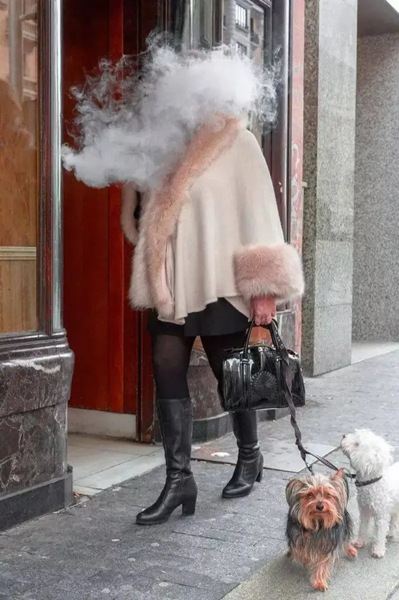
by Seth Adrian
30. A single photo says very little. That is why we shoot projects.
31. Truly strong work should come out as a photo book.
32. If a photo book is a Michelin restaurant, then Lofter and Flickr are fast food chains. So if you take photography seriously, read more books and less Lofter.
33. Only by studying excellent work will you know what a good photo looks like.
34. Many photos you think are great have already been shot to death by others.
35. A pretty photo and a good photo are not related.
36. A random selfie of a pretty girl looks nice, but I would not call it a good photo.
37. I believe good work has energy, makes the viewer think, and touches a chord.
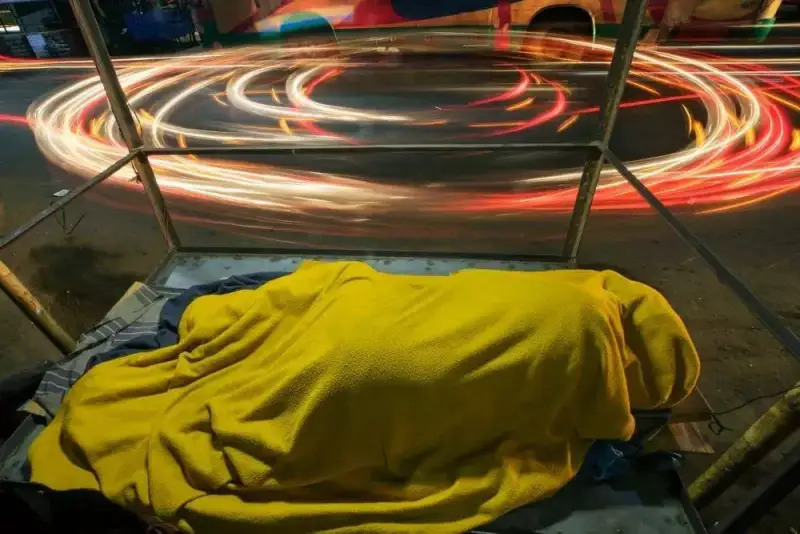
“Floating Hero,” by SOWRAV DAS (Bangladesh)
38. Composition matters, but content matters more.
39. Cropping is a bad habit. The more you crop, the weaker your composition skills are.
40. A good photo speaks for itself. You do not need to invent a story.
41. A photo anyone can take easily is not a good photo.
42. Most famous works in history were shot at a small aperture.
43. Anyone can blur the background with a wide aperture to separate the subject, but not everyone can make a strong image at a small aperture.
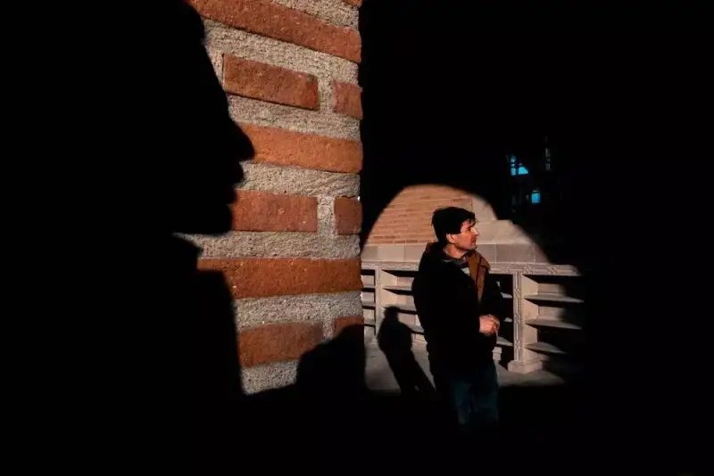
by İLKER KARAMAN(Turkey)
44. Anyone can secretly shoot the street with a long lens, but not everyone dares to get close to the subject.
45. A flash plus a small aperture makes the subject stand out while keeping the background visible.
46. Using a flash on the street is fine. It is just artificial light.
47. Autofocus is slow. For candid shots, use zone focusing (hyperfocal distance).
48. Among today's photographers, I really like the style of Charlie Kirk.
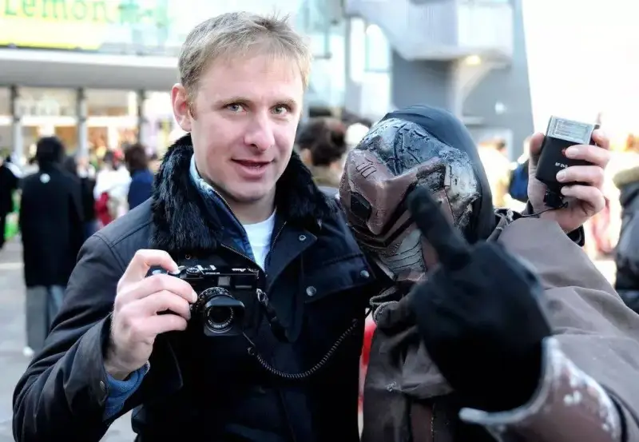
Charlie Kirk holding a camera in one hand and a flash in the other
49. I do not use long or zoom lenses on the street. I used a 35mm lens, and recently switched to 28mm.
50. Long-lens photos have no visual impact at all.
51. If your photos are not good enough, you are not close enough. This is the truth.
52. I think most people are not close enough, most of the time.
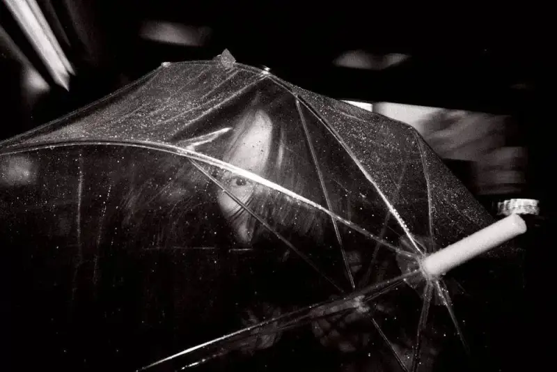
by Charlie Kirk
53. Compared to war photography, street photography is not dangerous at all.
54. The chance of being attacked while shooting street is about the same as being hit by a car on the way out.
55. Most street photos show people, but street photography can have no people at all, as long as it carries a human sense, such as a city scene.
For city-scene photo books, I like Stephen Shore's Uncommon Places.
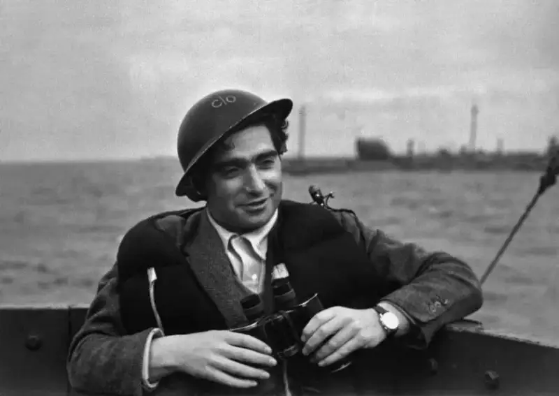
A destroyer arriving off the French coast. A tribute to the war photographer Robert Capa.
57. Jacob Aue Sobol and Trent Parke are Magnum photographers I also like. They are still young, and I rate them highly.
58. Everyone I have photographed on the street is my friend.
59. I only photograph people who interest me.
60. Blind shooting and secret shooting feel stranger and more awkward than candid shooting.
61. I have not heard of a photographer who makes great work by blind shooting. But in extreme cases, blind shooting is better than not shooting at all.
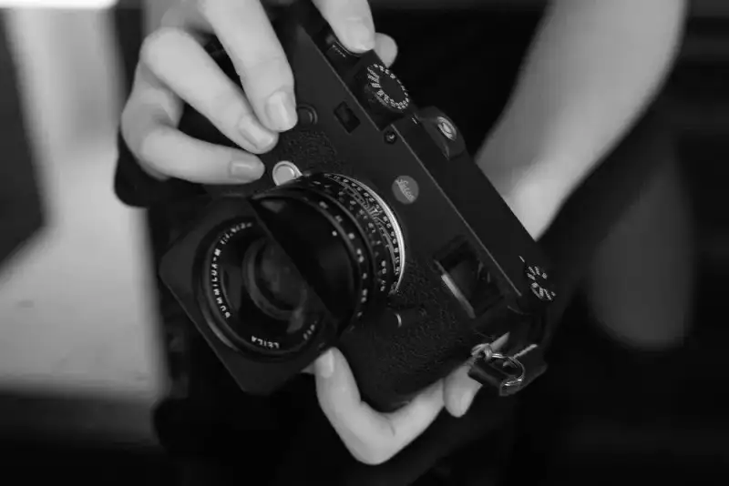
62. Do not hesitate when you press the shutter.
63. The more you hesitate, the more you miss the decisive moment.
64. Street photography asks very little of the camera. A phone is enough.
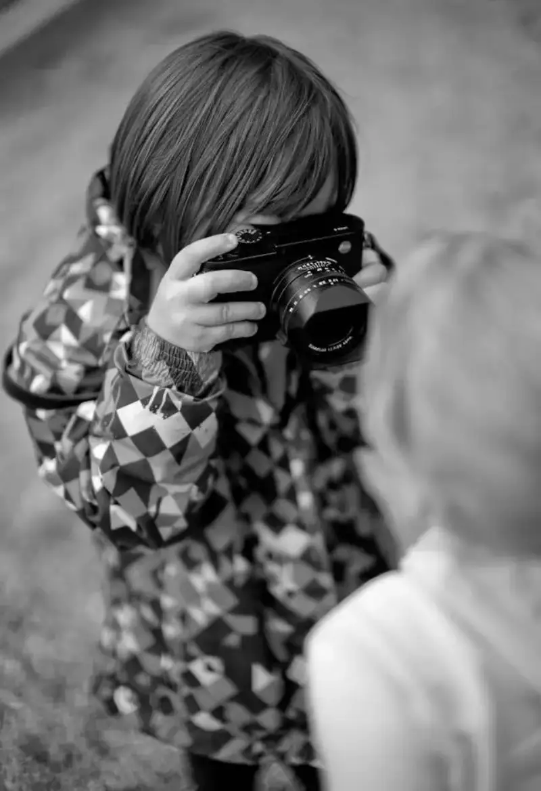
If you see something worth shooting, just go for it.
65. Image quality does not matter. No one says Henri Cartier-Bresson's photos are sharp.
66. Adding a watermark only cheapens a photo. To raise its value, make a fine-art print, frame it, or publish a photo book.
67. Spend 99 percent of your time selecting your best work, and 1 percent on post-processing (Lightroom, Photoshop).
68. Be ruthless when you select photos. Film or digital, selecting is the most important part. You can shoot the same scene freely, then pick the one or two frames you like best.
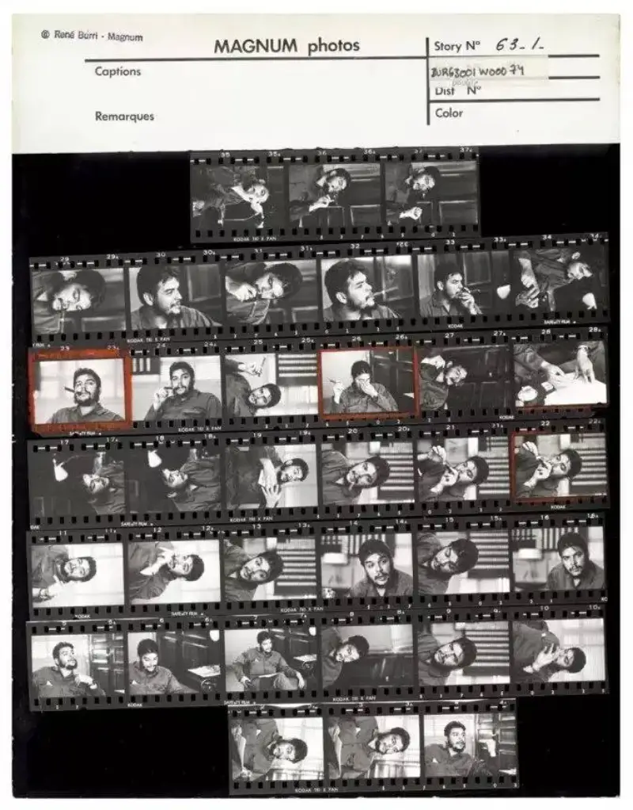
Figure: A contact sheet by Rene Burri.
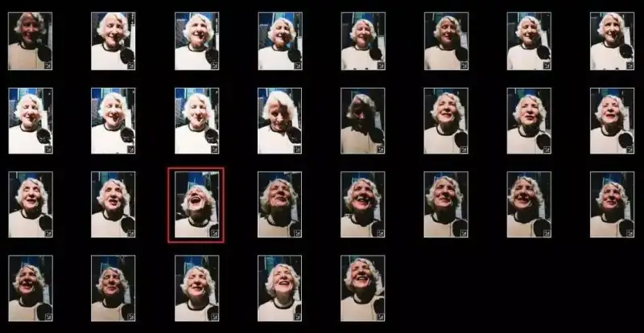
Figure: Eric Kim picks his favorite frame from a stack of photos.
69. Street photography is hard. The chance of a good frame is very low.
70. The longer you stay on the street with a camera, the more likely you are to get a good photo.
71. The more you shoot, the more likely you are to catch the decisive moment.
72. The thrill of street photography is that you never know what you will see next second.
Good photos are selected. Figure: Eric Kim picks his favorite frame from a stack of shots of the same scene.
73. The world already has enough bad photos. Do not add more. In other words, do not publish work you are not happy with.
74. A photo shot and posted the same day is 99 percent likely to be bad. Let it sit on your computer for a month before you decide to publish it.
75. I only publish my best work and my projects.
76. My best photo is the one I have not taken yet.
77. I have only shot street for half a year, but I feel I have great potential. I will shoot very well.
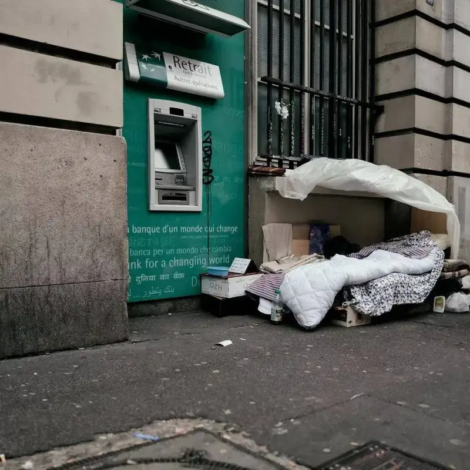
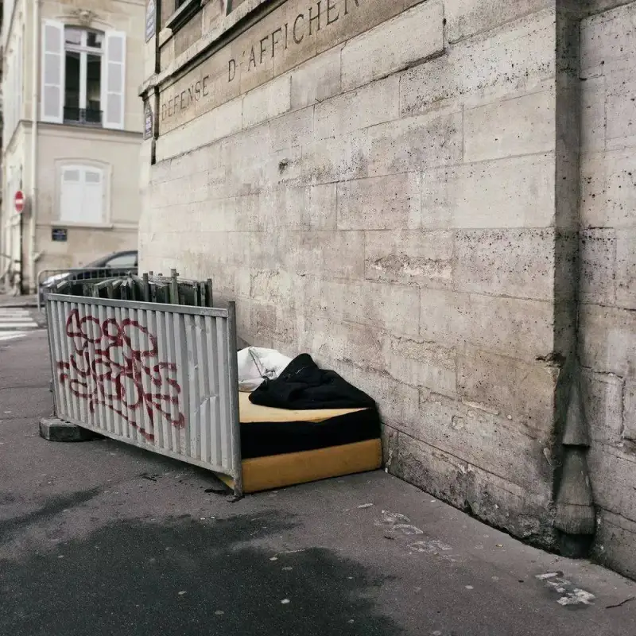
“Lucky Villa,” by LAURENT NICOURT (France)
78. Street performers and beggars are not worth shooting, unless you are working on a project.
79. Shooting just to shoot cannot produce good work.
80. Great street photographers all carry a sense of human concern.